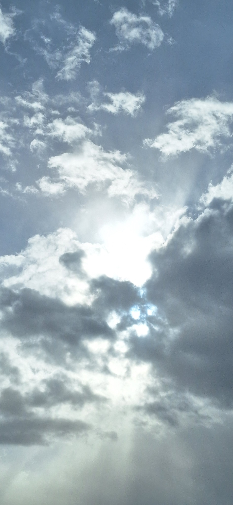
Cloudbreak
Sky study
Category Gallery
Nature, clouds, rivers, textures, animals, travel moments, and visual references captured through everyday photography.
Photography Collection
Click any image to open it fullscreen.

Sky study
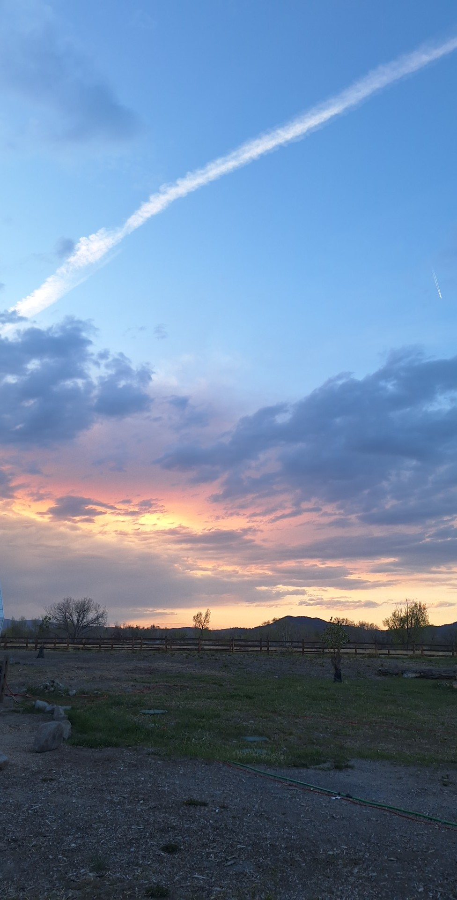
Landscape photography
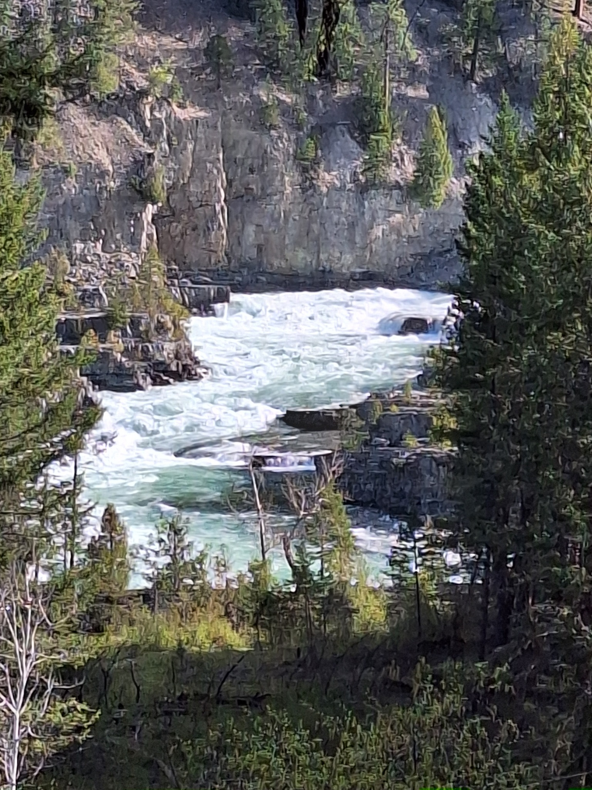
Nature photography
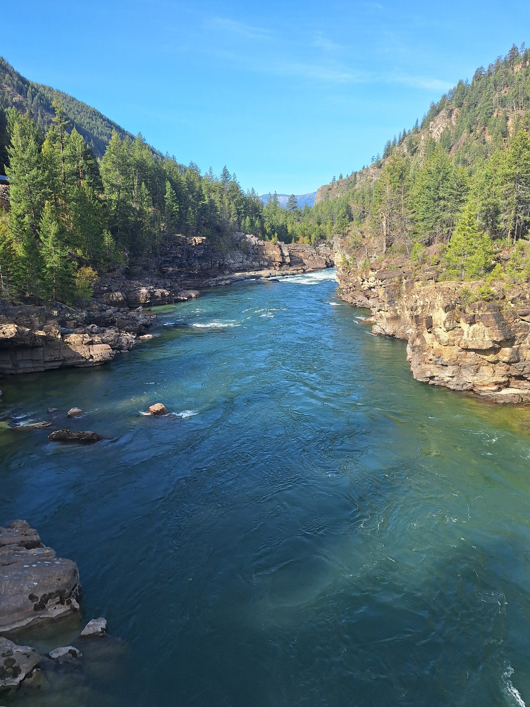
Landscape photography
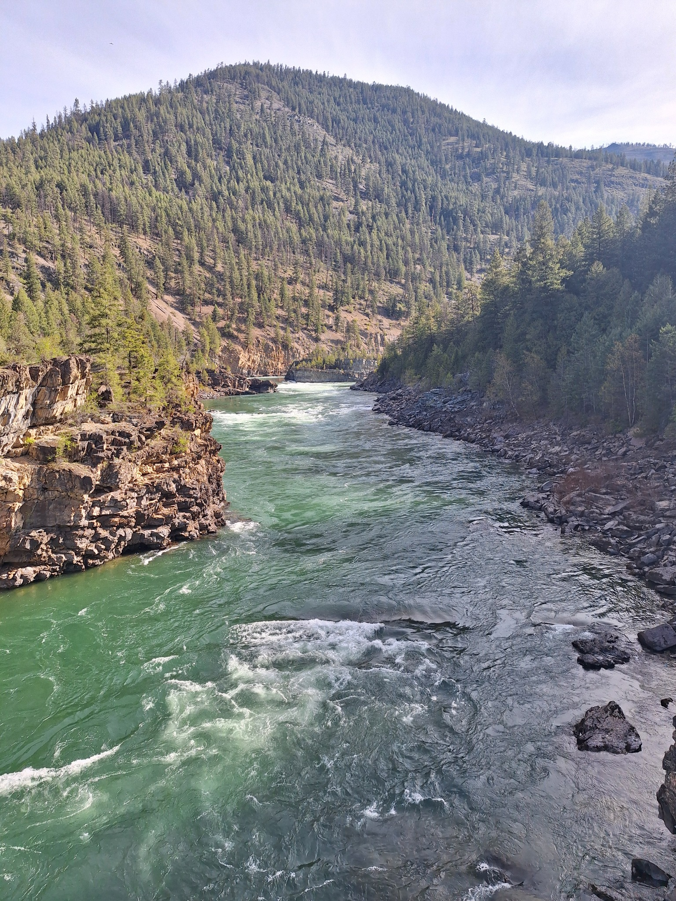
River landscape
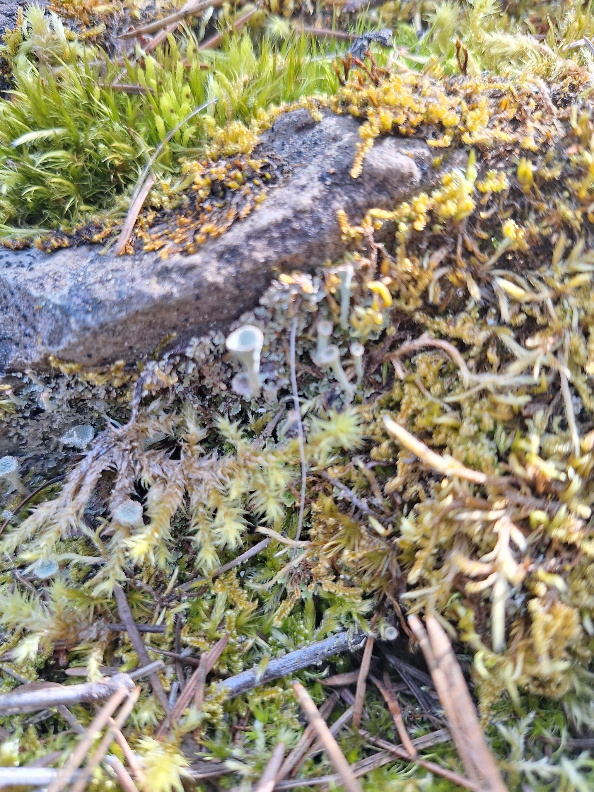
Macro nature study
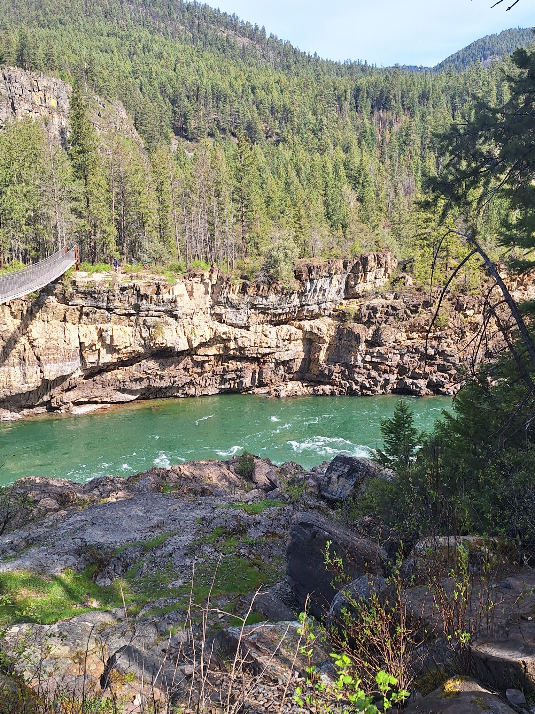
Travel photography
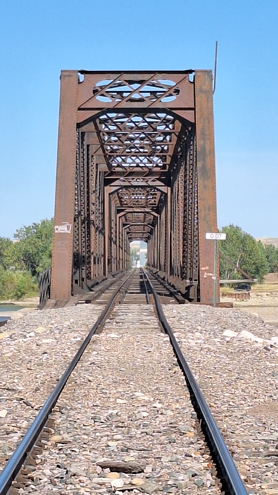
Perspective study
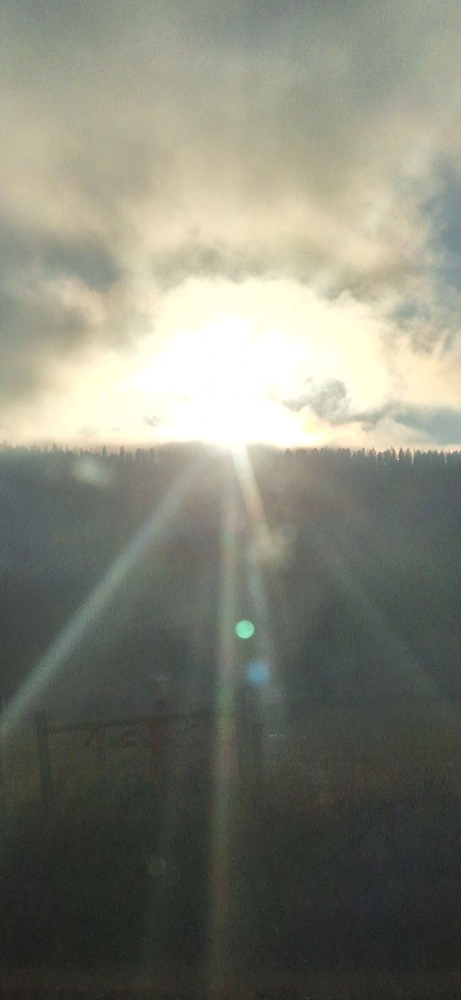
Atmospheric sky study
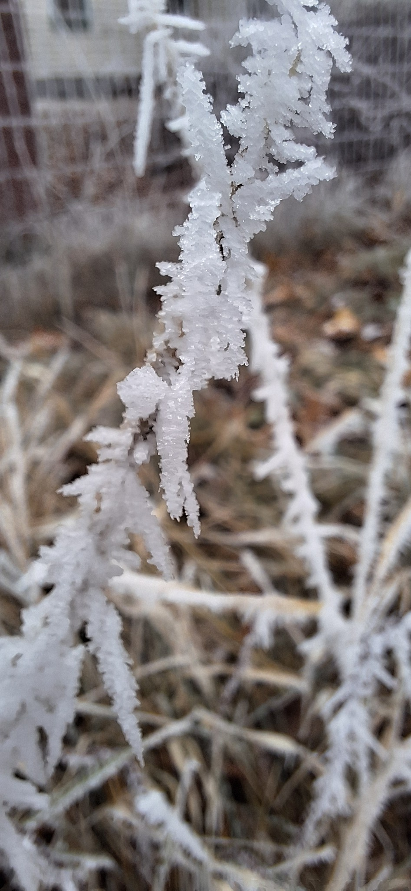
Macro texture study
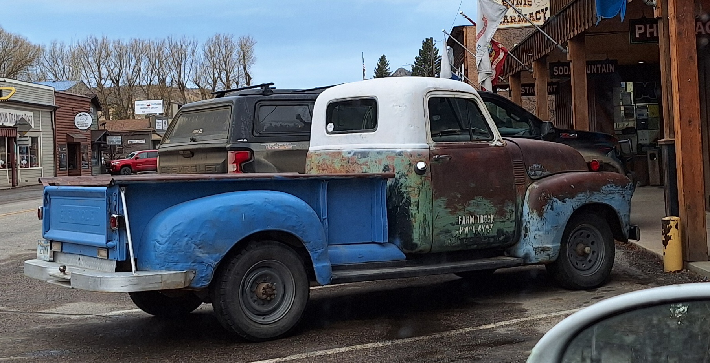
Rustic vehicle photography

Animal photography

Texture and light study

Pet photography

Animal portrait